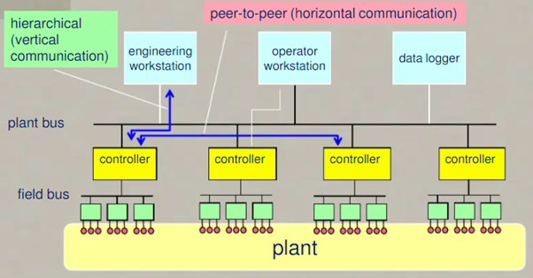

سیستم نرم افزاری کنترل تولید
طبیعتاً کار و کسب اصلی یک مجتمع تولیدی و سود و زیان آن به مقادیر مربوط به تناژ یا حجم خوراک، یوتیلیتی و محصولات مربوط می شود. لذا مدیریت مقدار خوراک و محصولات برای کنترل سود و زیان شرکت امر حیاتی است. با توجه به این امر، شرکت ایپک یادگار ایلیاد جم با روش های خلاقانه خود داده ها و اطلاعات عوامل موثر در تولید مجتمع را به صورت یکپارچه و تحت کنترل در قالب یک سیستم جامع تحت وب در اختیار مدیران و کارشناسان سازمان ها قرار می دهد. سازمانها و شرکت های تولیدی با پیاده سازی این سیستم به مزایای مهمی دست می یابند که برخی از آنها بدین شرح است
